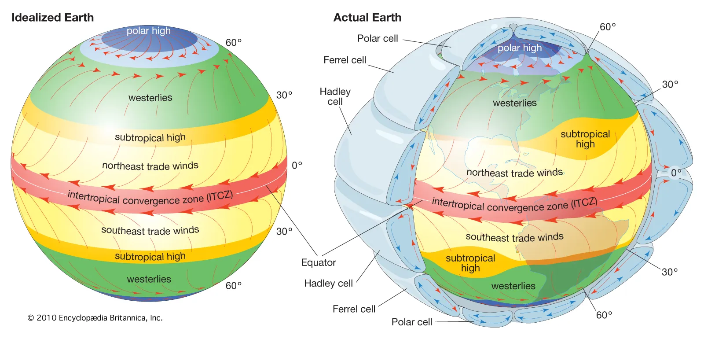

Winners
|
| |
Distance |
Time |
Gap |
|
IRMA 2017 |
4000 miles |
293 hours |
+0.00 hours |
|
MARIA 2017 |
4000 miles |
337 hours |
+44 hours |
|
DORIAN 2019 |
4000 miles |
347 hours |
+54 hours |
|
IAN 2022 (No finish) |
2514 miles |
204 hours |
NA hours |
|
OLGA 2019(No finish) |
1760 miles |
54 hours |
NA hours |
A Geostatistical Analysis
- What governs the path of the storms?
- What governs the speed of the storms?
Speed is only one component of velocity
The Bermuda High
Credits:
NASA/Goddard Space Flight Center Conceptual Images Lab
Animator: Susan Twardy (HTSI)
Scientist: David Adamec (NASA/GSFC)
Westerlies / Anti-Trade Winds

Credits:
Britannica, The Editors of Encyclopaedia. "atmospheric circulation".
Encyclopedia Britannica, 7 Mar. 2019,
https://www.britannica.com/science/atmospheric-circulation. Accessed 2 October 2024.
Wrapping Up
Dorian 2019
- Fun visualization of NOAA satellite imagery
- Statistical modeling of storm movement
- Some science behind movement dynamics: Bermuda High
- Looking forward...
Thank you!
Credits:
- NOAA Geostationary Operational Environmental Satellites (GOES) 16 was accessed September, 2024 from https://registry.opendata.aws/noaa-goes
- A portion of this work used code generously provided by Brian Blaylock's GOES-2-go python package (https://github.com/blaylockbk/goes2go)
- R version 4.4.0
- Python version 3.11
- Select credits for geospatial analysis
- R packages: {mgcv}, {sf}, {fields}
- Python packages: {cartopy}, {matplotlib}, {basemap}, {geopandas}, {netcdf4}
- Image frames compiled with
`imagemagick` from R
- Video frames composed with
`ffmpeg`
- Sprite-sheets used:
- https://www.deviantart.com/johnnytzut96/art/Oasis-in-Desert-TileSet-and-Sprite-Sheet-1011976003/ Credit: JohnnyTzut96
- https://www.spriters-resource.com/fullview/113678/ Credit: Mister Mike
- Slides presented using reveal.js Credit: Hakim El Hattab et al.